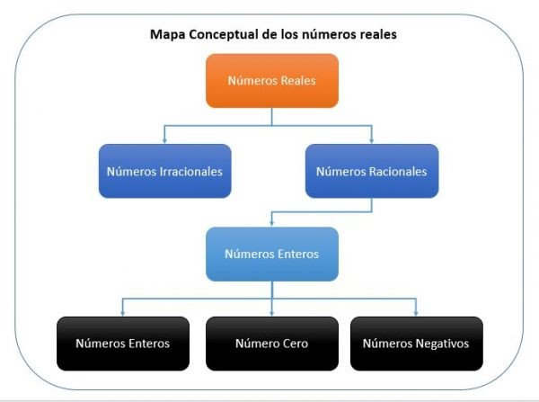
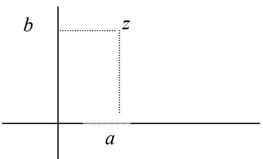

UNIDAD I SISTEMA DE NUMERACIÓN
Tema I Números Reales
Identificar los números reales
Conjunto de los números naturales N, el conjunto de números enteros Z, el conjunto de números racionales Q y el conjunto de números reales R. El primer conjunto N = {1, 2, 3, 4, 5, · · ·} se identificó intuitivamente como el conjunto con el cual se hacen conteos de objetos. El conjunto de números enteros Z = {0, 1, −1, 2, −2, 3, −3, · · ·} se introduce como el conjunto que contenía a los naturales y a los números negativos de estos. Este conjunto aparece ante la necesidad de explicar situaciones en las cuales intervienen alturas, temperaturas y otros fenómenos en los cuales es necesario hablar de cantidades por encima o por debajo del valor cero. El conjunto de números racionales Q se introduce como el conjunto de números de la forma a b, a, b ∈ Z, b 6= 0. Intuitivamente, se introduce ante la necesidad de hablar de porciones de la unidad tales como “la mitad”, “la cuarta parte”, etc. las cuales no pueden ser representadas en general mediante números enteros. Todo numero racional tiene la propiedad de que, si se realiza la división de a por b, se obtiene su la expresión decimal. La expresión decimal de todo numero racional es periódica, es decir, si se realiza la división de la fracción a b, a partir de cierto momento se repetirán los dígitos. La secuencia de dígitos repetidos se denomina periodo del numero racional.

Ejemplo 1. Si efectuamos la división de la fracción 2/3, se obtiene que 2/3= 0,666666... los tres puntos indican que el número 6 continúa repitiéndose indefinidamente.
En este caso, se escribe de manera resumida 2/3= 0,666666... = 0. − 6 y decimos que el periodo de 2/3 es 6.
Ejemplo 2. La fracción 15/23 tiene periodo 6521739130434782608695 por tanto su expresión decimal se escribe en forma resumida como
15/23 = 0.6521739130434782608695.
Esto indica que los 22 dígitos del periodo se repiten indefinidamente.
Con ejemplos como los números número π ≈ 3,141592653589793238462 · · ·, e ≈ 2,71728182845904523536028 · · · y √ 2 ≈ 1,4142135623730950488016887242 · · ·, se ilustra que existen números que no poseen una expresión decimal periódica. A este conjunto de números se le llama “Conjunto de Números Irracionales” y se denomina con el símbolo I. Finalmente, se dice que el conjunto de números reales R es el conjunto de las expresiones decimales infinitas. Como estas son periódicas o no periódicas, un resultado inmediato es que R es la unión de Q con I. Esto es: R = Q ∪ I
Se puede decir que un conjunto numérico está determinado por objetos llamados números y por las propiedades que caracterizan las operaciones entre sus números las cuales, conforman la estructura algebraica del conjunto numérico, para definir el conjunto de números reales R, se establecerán las propiedades que caracterizan a sus elementos, las cuales son conocidas como Axiomas de campo.
Axiomas de campo de los números reales
En el conjunto de los números reales, se definen dos operaciones: la suma o adición y el producto o multiplicación y una relación de orden, denotada por “<” que satisfacen los siguientes axiomas. A estos axiomas también se les conoce como propiedades de los números reales.
| Conmutativas | a + b = b + a | a.b = b.a |
|---|---|---|
| Asociativas | (a + b) + c = a + (b + c) | (a.b).c = a.(b.c) |
| Distributividad | (a + b).c = a.c + b.c |
Axiomas de la adición
Axioma 1 Para todo a y b en R, a + b ∈ R. Estabilidad o cerradura. Se dice que los números reales son cerrados respecto a la adición (escrita frecuentemente por +). Esto quiere decir que, a cada par de números en este conjunto, por ejemplo, a y b corresponde exactamente un número real a + b Llamado suma de a y b.
Axioma 2 Para todo a y b en R, a + b = b + a. Ley conmutativa.
Axioma 3 Para todo a, b y c en R, (a + b) + c = a + (b + c). Ley asociativa.
Axioma 4 Existe un elemento y sólo uno, al que se denota por “0”, tal que para todo a en R, a + U = a = U + a. La existencia y unicidad del elemento neutro aditivo.
Axioma 5 Para cada a en R, hay un y sólo un elemento, al que se denota por -a, tal que a + (-a) = -a + a. La existencia y unicidad del elemento inverso aditivo.
Axiomas de la multiplicación
Axioma 1 Para todo a y b en R, ab ∈ R. Estabilidad. Este conjunto también es cerrado en relación a la multiplicación (escrita por conveniencia por ·), equivalentemente a cada par de números a, b corresponden un número real a · b también escrito como ab, llamado producto de a y b
Axioma 2 Para todo a y b en R, ab = ba. Ley conmutativa.
Axioma 3 Para todo a, b y c en R, (ab)c = a(bc). Ley asociativa.
Axioma 4 Existe un elemento y sólo uno, al que se denota por “1”, diferente de “0”, tal que para todo a en R, a . 1 = a = 1 . a. La existencia y unicidad del elemento neutro multiplicativo.
Axioma 5 Para cada a en R, hay un y sólo un elemento, al que se denota por a-1, tal que a . a-1 = 1 = a-1 . a. La existencia y unicidad del elemento inverso multiplicativo.
Explicación de resolución de operaciones
Suma de números reales
La suma de números reales, también llamada adición, es una operación que se efectúa entre dos números, pero se pueden considerar también más de dos sumandos. Siempre que se tengan dos números reales, se pueden sumar entre sí. La suma tiene las siguientes propiedades:
Conmutatividad. La expresión usual de esta propiedad es: "el orden de los sumandos no altera la suma". Si a y b son dos números reales, la conmutatividad se puede expresar así: a + b = b + a
Ejemplos:
• 3.25 + 1.04 = 4.29, y también 1.04 + 3.25 = 4.29
• 15.87 + (–2.35) = 13.52, y también –2.35 + 15.87 = 13.52
• 2/5 + 1/2 = (4+5)/10 = 9/10 , y también 1/2 + 2/5 = (5+4)/10 = 9/10
Asociatividad. Si se tienen más de dos sumandos, da igual cuál de las sumas se efectúe primero. Si a, b y c son tres números reales, la asociatividad dice que: a + (b + c) = (a + b) + c
• 0.021 + (0.014 + 0.033) = 0.021 + 0.047 = 0.068, y también (0.021 + 0.014) + 0.033 = 0.035 + 0.033 = 0.068
• –186.3 + (–223.6 + 202.1) = –186.3 + (–21.5) = –207.8, y también [–186.3 + (–223.6)] + 202.1 = –409.9 + 202.1 =–207.8
• 3/4 +( 1/2 + 2/3)= 3/4 +((3+4)/6 )= 3/4 +7/6 = (9+14)/12 =23/12 , y también (3/4 + 1/2)+ 2/3 =( (3+2)/4)+ 2/3 = 5/4 +2/3 = (15+8)/12 = 23/12
Como da igual en qué orden se efectúen las sumas, lo usual es prescindir de los paréntesis, y marcar sólo a + b + c. En nuestros ejemplos, tenemos entonces 0.021 + 0.014 + 0.033,
o bien –186.3 + (–223.6) + 202.1, o bien 3/4 + 1/2 + 2/3 .
Las propiedades de la conmutatividad y la asociatividad son utilizadas cuando en una suma "acomodamos" los sumandos para facilitar el proceso. Por ejemplo, cuando compramos pan de dulce en una panadería, la dependienta va sumando los precios de las distintas piezas de tal modo que los resultados intermedios sean "cómodos". Digamos que las piezas que tenemos en la charola cuestan $1.50, $0.70, $0.80, $1.30, $0.50 y $1.20. 77 LECCIÓN 7 3 4 1 2 2 3 3 4 3 + 4 6 3 4 7 6 9 + 14 12 23 12 3 4 1 2 2 3 3 + 2 4 2 3 5 4 15 + 8 12 23 12
Resta de números reales
La resta La resta es la operación inversa de la suma, es una operación entre dos números: el minuendo y el sustraendo. Siempre que se tengan dos números reales, se pueden restar; por ejemplo:
Restar un número positivo es lo mismo que sumar un número negativo.
Ejemplo:
28.7 – 11.2 = 28.7 + (–11.2) = 17.5
Restar un número negativo es lo mismo que sumar un número positivo.
Ejemplo:
28.7 – (–11.2) = 28.7 + 11.2 = 39.3
–28.7 – (–11.2) = –28.7 + 11.2 = 11.2 – 28.7 = –17.5
Multiplicación de números reales
La multiplicación de números reales es una operación que se efectúa entre dos números, pero se pueden considerar también más de dos factores. Siempre que se tengan dos números reales, se pueden multiplicar entre sí. Al efectuar multiplicaciones hay que tener cuidado con los signos:
• El producto de dos números de igual signo siempre es positivo;
• El producto de dos números de distinto signo siempre es negativo. La multiplicación tiene las siguientes propiedades:
• Conmutatividad. La expresión usual de esta propiedad es: "el orden de los factores no altera el producto". Si a y b son dos números reales, la conmutatividad se puede expresar así:
a x b = b x a
Ejemplo
–186.3 x (–223.6 x 202.1) = –186.3 x (–45189.56) = 8418815.028, y también [–186.3 x (–223.6)] x 202.1 = 41656.68 x 202.1 = 8418815.028
3/4 ꭓ ( 1/2 × 2/3 ) = 3/4 ꭓ ( 1/2 × 2/3 ) = 3/4 ꭓ 2/6 = (3 × 2)/(4 ×6) = 6/24 = 1/4 y también ( 3/4 × 1/2 ) ꭓ 2/3 = ( (3 ×1)/(4 ×2) ) ꭓ 2/3 = 3/8 ꭓ 2/3 = (3 × 2)/(8 × 3) = 6/24 = 1/4
En los ejemplos, tenemos entonces:
0.021 x 0.014 x 0.033, o bien –186.3 x (–223.6) x 202.1, o bien x x Cuando se usan letras, se marca sólo a x b x c, o bien, para evitar que el signo x se confunda con la letra x, se marca a b c, o bien se usa un punto en vez de la cruz: a·b·c.
Es también común prescindir del signo x cuando se señalan productos con los números entre paréntesis: por ejemplo, en vez de escribir (–5) x (–3), podemos escribir (–5) (–3), y en vez de escribir 3 x 4 podemos escribir 3(4).
Es decir, cuando no se señala ninguna operación entre dos números, se efectúa una multiplicación.
• Elemento neutro. El número real 1 multiplicado a cualquier número lo deja sin cambiar: si a es un número real, entonces: a x 1 = a
• 8763.218 x 1 = 8763.218
• 1 x (–56.41) = –56.51
• 1 8/14 × 1 = 1 8/14
La división es la operación inversa de la multiplicación, es una operación entre dos números: el dividendo y el divisor. Con una excepción, siempre que se tengan dos números reales, se pueden dividir; por ejemplo:
La excepción es que el divisor no puede ser cero. Esto es, no se puede dividir entre cero.
Observe que el dividendo sí puede ser cero, y cuando esto ocurre el resultado o cociente siempre es cero. Por ejemplo, 0 ÷ 5.41 = 0
Las reglas de los signos en el caso de la división son las mismas que para la multiplicación:
• el cociente de dos números de igual signo siempre es positivo;
• el cociente de dos números de distinto signo siempre es negativo.
Aunque la división está muy emparentada con la multiplicación, no tiene todas las propiedades de la multiplicación. Por ejemplo, la división no es una operación conmutativa:
6.42 ÷ 3 = 2.14, y ese resultado es distinto de 3 ÷ 6.42 ≈ 0.467
Números complejos
Concepto de números complejos
Un número complejo es una expresión con dos sumandos: uno es un número real y el otro es un número real por una letra i. Por ejemplo, z es un ejemplo de número complejo: z = 3 + 4i El sumando sin la i se denomina parte real, mientras que el número que acompaña a la i se denomina parte imaginaria del número complejo. En el ejemplo anterior, 3 es la parte real y se indica 3 = Re(z); mientras que 4 es la parte imaginaria y se indica 4 = Im(z). Un número complejo también puede escribirse en forma de par ordenado; en el ejemplo, el número complejo z = 3 + 4i también puede escribirse como (3, 4), siendo la primera coordenada la parte real, y la segunda coordenada la parte imaginaria. Así pues, un número complejo es un número formado por una parte real, a, y una parte imaginaria, b, que se escribe a + bi o bien, (a, b)
Representación gráfica
Se sabe que la recta está cubierta por los números reales. Como los complejos son binomios de reales y un elemento NO real como i , los representaremos sobre un par de rectas perpendiculares (horizontal y vertical). La parte real del complejo se representa sobre la recta horizontal y la parte imaginaria sobre la recta vertical. Graduadas como los ejes cartesianos. Si z = a + b i

Se definen dos operaciones en este nuevo conjunto C: la suma, que indicaremos por + y la multiplicación, que indicaremos por . que están dadas por las siguientes igualdades:
(S) (a + bi) + (c + di) = (a + c) + (b + d) i
(M) (a + bi).(c + di) = (a.c – b.d)+(a.d + b.c) i
¿Son necesarios los números complejos?
Los números complejos son imprescindibles, ya que permiten que cualquier ecuación polinómica tenga solución. Para ello, se requiere que los números reales sean completados con el denominado número i, cuyo valor es i = √(-1) .
Es fácil observar que existen ecuaciones que no tienen solución real. Por ejemplo, la ecuación
x2+ 1 = 0
no tiene solución, ya que si aislamos x2:
x2= –1
y no existe ningún número real que elevado al cuadrado sea –1, porque debería suceder que:
x = √(-1)
y ya sabemos que no existe la raíz cuadrada de un número negativo. Para permitir que ecuaciones del tipo anterior también tengan solución, se completan los números reales añadiendo la raíz cuadrada de –1, con lo que obtenemos los números complejos. A la raíz cuadrada de –1 se le denomina i:
i = √(-1) es decir i2 = –1
y, cualquier número complejo se puede expresar de la forma:
z = a + bi
Veamos que la ecuación anterior tiene solución compleja:
x2 = –1
por lo tanto,
x = ± √(-1) =± i
Es decir, las soluciones de la ecuación son +i y –i. Veámoslo:
i2 + 1 = –1 + 1 = 0
(–i)2 + 1 = –1 + 1 = 0
De este modo, cualquier ecuación polinómica tiene solución compleja.
Proceso de resolución operacional de números complejos
Suma de números complejos
Ahora nos dedicaremos al estudio de las propiedades de los números complejos relacionadas con la suma de ellos.
La operación suma de números complejos está basada en la suma de números reales. Cada complejo tiene una parte real y una parte imaginaria. Para sumar complejos hay que sumar las partes reales por un lado y las partes imaginarias por otro lado, como numero ´ s reales. Al hacer esto nos encontramos de nuevo con otro número complejo. Más precisamente
Sean z1 = a1 + b1i y z2 = a2 + b2i dos numero ´ s complejos. Entonces la suma de z1 con z2, denotada por z1 + z2 es el numero complejo
Z1 + z2 = (a1 + a2) + (b1 + b2)i
Es decir, para sumar números complejos simplemente se suman sus componentes correspondientes.
Ejemplo. Para sumar z1 = 3 + 2i con z2 = −8 + 4i hacemos
z1 + z2 = (3 + 2i) + (−8 + 4i) = (3 − 8) + (2 + 4)i
z1 + z2 = −5 + 6i
Resta de números complejos.
La resta o diferencia de dos números complejos se realiza restando cada parte por separado. Más precisamente: Sean Z = a + bi y
W = c+di dos números complejos, entonces la diferencia o resta entre Z y W viene dada por
Z − W = (a − c) + (b − d)i
Es decir, para restar dos números complejos se restan sus componentes correspondientes.
Ejemplo. Sean Z = 4 + 7i y W = 2 + 3i. Entonces
Z − W = (4 − 2) + (7 − 3)i = 2 + 4i
Estas operaciones de suma y resta satisfacen las siguientes propiedades generales
1. Propiedad de Cierre para la suma. Si Z y W son dos números complejos entonces tanto Z + W como Z − W son números complejos.
2. Propiedad asociativa. Si Z, W y U son números complejos, entonces se tiene Z + (W + U) = (Z + W) + U
3. Propiedad Conmutativa. Si Z y U son numero ´ s complejos, se tiene Z + U = U + Z
4. Propiedad del elemento neutro. El numero complejo 0 = 0 + 0i, es el elemento neutro para la suma. En efecto, si Z = a + bi es cualquier numero complejo se tiene Z + 0 = (a + bi) + (0 + 0i) = (a + 0) + (b + 0) i = a + bi = Z de la misma forma, se puede probar que 0 + Z = Z
5. Propiedad del opuesto. Si Z = a+bi es un numero ´ complejo, el opuesto de este es −Z = −a − bi, el cual es otro número complejo.
Nótese que el opuesto satisface Z + (−Z) = (−Z) + Z = 0 Usando todas estas propiedades, es posible calcular expresiones complicadas en donde aparezcan sumas y restas de números complejos
Multiplicación de números complejos.
Para multiplicar números complejos se aplica la propiedad distributiva teniendo en cuenta que i2 = -1. z*w = (a + bi) *(c + di) = (ac-bd) + (ad+bc)i
El resultado es otro número complejo que tiene:
Parte real igual al producto de las partes reales de los números, menos el producto de las partes imaginarias. Parte imaginaria igual al producto de la parte real del primero por la parte imaginaria del segundo, más la parte imaginaria del primero por la parte real del segundo.
En el ejemplo dado a continuación, (1+i)*(-1+i) = -1+i-i+i2 = -1-1 = -2
En el caso de que deseemos realizar el producto de números complejos en forma polar, obtendríamos un numero complejo tal que:
Su módulo es el producto de los módulos de los factores. Su argumento es la suma es la suma de los argumentos de los factores. r(α)*s(β) = (r*s)(α+ β) En el ejemplo dado a continuación, √2(45)*√2(135) = √2*√2(45+135) = 2(180) = -2
División de números complejos
Para dividir dos números complejos se multiplica el numerador y el denominador por el conjugado del denominador. (El conjugado de un número complejo es otro número complejo que tiene la misma parte real y la parte imaginaria cambiada de signo).
El resultado es otro número complejo que tiene:
Parte real igual al producto de las partes reales de los números, más el producto de las partes imaginarias, dividido entre la suma de los cuadrados de la parte real e imaginaria del divisor. Parte imaginaria igual al producto del aparte imaginaria del primero por la parte real del segundo, menos la parte real del primero por la parte imaginaria del segundo, dividido entre la suma de los cuadrados de la parte real e imaginaria del divisor.
En el ejemplo dado a continuación, (1+i)/(-1+i) = (1+i)*(-1-i)/ (-1+i)*(-1-i) = -1-i-i-i2/1-i2 = -2i/2 = -i
En el caso de que deseemos realizar el cociente de números complejos en forma polar, obtendríamos un numero complejo tal que:
Su módulo es el cociente de los módulos de los factores. Su argumento es la resta de los argumentos de los factores. r(α)/s(β) = (r/s)(α-β)
En el ejemplo dado a continuación, √2(45)/√2(135) = √2/√2 (45-135) = 1(-90) = 1(270) = -i
Teorema de Moivre
El teorema de Moivre aplica procesos fundamentales de álgebra, como las potencias y la extracción de raíces en números complejos, el matemático francés Abraham de Moivre asoció los números complejos con la trigonometría.
Moivre realizó esta asociación por medio de las expresiones del seno y coseno. Este matemático generó una especie de fórmula a través de la cual es posible elevar un número complejo z a la potencia n, que se trata de un número entero positivo mayor o igual 1.
El teorema de Moivre establece lo siguiente:
Si se tiene un número complejo en la forma polar z = rƟ, donde r es el módulo del número complejo z, y el ángulo Ɵ es llamado amplitud o argumento de cualquier número complejo con 0 ≤ Ɵ ≤ 2π, para calcular su n–ésima potencia no será necesario multiplicarlo por sí mismo n-veces; es decir, no es necesario realizar el siguiente producto:
Zn = z * z * z*. . .* z = rƟ * rƟ * rƟ *. . .* rƟ n-veces.
Por el contario, el teorema dice que, al escribir z en su forma trigonométrica, para calcular la n-ésima potencia se procede de la siguiente forma:
Si z = r (cos Ɵ + i * sen Ɵ) entonces zn = rn (cos n*Ɵ + i * sen n*Ɵ).
Por ejemplo, si n = 2, entonces z2 = r2[cos 2(Ɵ) + i sen 2 (Ɵ)]. Si se tiene que n = 3, entonces z3 = z2 * z. Además:
z3 = r2[cos 2(Ɵ) + i sen 2 (Ɵ)] * r [cos 2(Ɵ) + i sen 2 (Ɵ)] = r3[cos 3(Ɵ) + i sen 3 (Ɵ)].
De esa manera pueden obtenerse las razones trigonométricas del seno y coseno para múltiplos de un ángulo, siempre y cuando las razones trigonométricas del ángulo sean conocidas.
De igual manera puede ser utilizada para encontrar expresiones más precisas y menos confusas para la n -ésima raíz de un número complejo z, de modo que zn = 1.
Para demostrar el teorema de Moivre se usa el principio de inducción matemática: si un número entero «a» tiene una propiedad «P», y si para cualquier número entero «n» mayor que «a» que tenga la propiedad «P» se cumple que n + 1 también tiene la propiedad «P», entonces todos los números enteros mayores o iguales que “a” tienen la propiedad «P».
Ejemplo
Primero se comprueba para n = 1.
Como z1 = (r(cos Ɵ + i * sen Ɵ))1 = r1 (cos Ɵ + i * sen Ɵ)1 = r1 [cos (1* Ɵ) + i * sen (1* Ɵ)], se tiene que para n=1 se cumple el teorema.
Se supone que la fórmula es cierta para algún entero positivo, es decir, n = k.
zk = (r (cos Ɵ + i * sen Ɵ))k = rk (cos k Ɵ + i * sen k Ɵ).
Se prueba que es cierta para n = k + 1.
Como zk+1= zk * z, entonces zk+1 = (r(cos Ɵ + i * sen Ɵ))k+1 = rk (cos kƟ + i * sen kƟ) * r (cos Ɵ + i* senƟ).
Luego se multiplican las expresiones:
zk+1 = rk+1( (cos kƟ)*(cosƟ) + (cos kƟ)*(i*senƟ) + (i * sen kƟ)*(cosƟ) + (i * sen kƟ)*(i* senƟ)).
Por un momento se ignora el factor rk+1, y se saca factor común i:
(cos kƟ)*(cosƟ) + i(cos kƟ)*(senƟ) + i( sen kƟ)*(cosƟ) + i2( sen kƟ)*(senƟ).
Como i2 = -1, lo sustituimos en la expresión y se obtiene:
(cos kƟ)*(cosƟ) + i(cos kƟ)*(senƟ) + i( sen kƟ)*(cosƟ) – ( sen kƟ)*(senƟ).
Ahora se ordena la parte real y la imaginaria:
(cos kƟ)*(cosƟ) – ( sen kƟ)*(senƟ) + i[( sen kƟ)*(cosƟ) + (cos kƟ)*(senƟ)].
Para simplificar la expresión se aplican las identidades trigonométricas de suma de ángulos para el coseno y seno, que son:
cos (A+B) = cos A * cos B – sen A * sen B.
sen (A+B) = sen A * cos B – cos A * cos B.
En este caso, las variables son los ángulos Ɵ y kƟ. Aplicando las identidades trigonométricas, se tiene:
cos kƟ * cosƟ – sen kƟ * senƟ = cos(kƟ + Ɵ)
sen kƟ * cosƟ + cos kƟ * senƟ = sen(kƟ + Ɵ)
De esa forma, la expresión queda:
zk+1 = rk+1 (cos(kƟ + Ɵ) + i * sen(kƟ + Ɵ))
zk+1 = rk+1(cos [(k +1) Ɵ] + i * sen[(k +1) Ɵ]).
Así pudo demostrarse que el resultado es verdadero para n = k+1. Por el principio de inducción matemática, se concluye que el resultado es verdadero para todos los enteros positivos; es decir, n ≥ 1.
Ejemplo
El teorema de Moivre también es aplicado cuando n ≤ 0 (negativo). Consideremos un entero negativo «n»; entonces «n» puede escribirse como «-m», es decir n=-m, siendo «m» un entero positivo. Por lo tanto:
(cos Ɵ + i * sen Ɵ)n = (cos Ɵ + i * sen Ɵ) -m
Para obtener el exponente «m» de forma positiva, la expresión se es escribe de forma inversa:
(cos Ɵ + i * sen Ɵ)n = 1 ÷ (cos Ɵ + i * sen Ɵ) m
(cos Ɵ + i * sen Ɵ)n = 1 ÷ (cos mƟ + i * sen mƟ)
Ahora, se utiliza que si z=a+b*i es un número complejo, entonces 1÷z = a-b*i. Por lo tanto:
(cos Ɵ + i * sen Ɵ)n = cos (mƟ) – i * sen (mƟ).
Utilizando que cos(x)=cos(-x) y que -sen(x)=sen(-x), se tiene que:
(cos Ɵ + i * sen Ɵ)n = [cos (mƟ) – i * sen (mƟ)]
(cos Ɵ + i * sen Ɵ)n = cos (- mƟ) + i * sen (-mƟ)
(cos Ɵ + i * sen Ɵ)n = cos (nƟ) – i * sen (nƟ).
De esa forma, se puede decir que el teorema aplica para todos los valores enteros de «n».
Ejercicio resuelto con pasos
Una de las operaciones con números complejos en su forma polar es la multiplicación entre dos de estos; en ese caso se multiplican los módulos y se suman los argumentos.
Si se tienen dos números complejos z1 y z2 y se quiere calcular (z1*z2)2, entonces se procede de la siguiente manera:
z1z2 = [r1 (cos Ɵ1 + i * sen Ɵ1)] * [r2 (cos Ɵ2 + i * sen Ɵ2)]
Se aplica la propiedad distributiva:
z1z2 = r1 r2 (cos Ɵ1* cos Ɵ2 + i * cos Ɵ1* i * sen Ɵ2 + i * sen Ɵ1* cos Ɵ2 + i2* sen Ɵ1* sen Ɵ2).
Se agrupan, sacando el término «i» como factor común de las expresiones:
z1z2 = r1 r2 [cos Ɵ1* cos Ɵ2 + i (cos Ɵ1* sen Ɵ2 + sen Ɵ1* cos Ɵ2) + i2* sen Ɵ1* sen Ɵ2]
Como i2 = -1, se sustituye en la expresión:
z1z2 = r1 r2 [cos Ɵ1* cos Ɵ2 + i (cos Ɵ1* sen Ɵ2 + sen Ɵ1* cos Ɵ2) – sen Ɵ1* sen Ɵ2]
Se reagrupan los términos reales con reales, e imaginarios con imaginarios:
z1z2 = r1 r2 [(cos Ɵ1* cos Ɵ2 – sen Ɵ1* sen Ɵ2) + i (cos Ɵ1* sen Ɵ2 + sen Ɵ1* cos Ɵ2)]
Para finalizar, se aplican las propiedades trigonométricas:
z1z2 = r1 r2 [cos (Ɵ1 + Ɵ2) + i sen (Ɵ1 + Ɵ2)].
En conclusión:
(z1*z2)2=(r1 r2 [cos (Ɵ1 + Ɵ2) + i sen (Ɵ1 + Ɵ2)])2
= r12r22[cos 2*(Ɵ1 + Ɵ2) + i sen 2*(Ɵ1 + Ɵ2)].
Sistemas de numeración
Sistemas de numeración: binario, decimal, octal y hexadecimal
Un sistema de numeración es el conjunto de símbolos y reglas que se utilizan para la representación de datos numéricos o cantidades. Un sistema de numeración se caracteriza por su base, que es el número de símbolos distintos que utiliza y además es el coeficiente que determina cuál es el valor de cada símbolo dependiendo de la posición que ocupe. De manera que el sistema binario es el más importante de los sistemas digitales, pero también hay otros que también lo son, por ejemplo, el sistema decimal es el que se utiliza para representar cantidades fuera de un sistema digital y viceversa; hay situaciones donde se deben llevar números decimales a binarios para hacer algún tipo de procesamiento. La computadora debido a su construcción basada en circuitos electrónicos digitales, almacena y maneja la información con el sistema binario. Este el motivo que obliga a transformar internamente todos los datos, a una representación binaria para que la máquina sea capaz de procesarlos. Pero también existen otros dos sistemas con los cuales se pueden realizar aplicaciones en los sistemas digitales; éstos son el sistema octal (Base 8) y el hexadecimal (Base 16), éstos se usan con la finalidad de ofrecer un eficaz medio de representación de números binarios grandes, teniendo la ventaja de poder convertirse fácilmente al y del binario, y ser los más compatibles con éste.
| Sistema | Identificador |
|---|---|
| Decimal | D o ninguna letra | Binario | B | Octal | Q u O | Hexadecimal | H |
Sistema de numeración Decimal
El sistema decimal desde hace tiempo se ha utilizado como sistema para contar, que derivó del sistema indoarábigo, posiblemente se adoptó este sistema por contar con 10 dedos en las manos, también utiliza un conjunto de símbolos, cuyo significado depende de su posición relativa al punto decimal, que en caso de ausencia se supone colocado implícitamente a la derecha.
Basado en diez símbolos (0, 1, 2, 3, 4, 5, 6, 7, 8, 9), que, al combinarlos, permiten representar las cantidades imaginadas; es por esto que se dice que utiliza la base 10.
Sistema de numeración Binario
Este sistema de base 2 es el más sencillo de todos por poseer sólo dos dígitos, es el sistema que internamente utilizan los circuitos digitales que configuran el hardware de las computadoras actuales, los dos dígitos, llamados bits (Contracción de binary digit), son el uno (1) y el cero (0), En bit más significativo (MSB) es aquel que se ubica más a la izquierda (el que tiene mayor valor). El bit menos significativo (LSB) es aquel que está más a la derecha y que tiene el menor valor.
Para la medida de unidades de información representada en binario, se utilizan una serie de múltiplos de bit que poseen nombre propio:
• Nibble o Cuarteto: Es el conjunto de cuatro bits (1001).
• Byte u Octeto: Es el conjunto de ocho bits (10101010).
• Kilobyte (Kb): Es el conjunto de 2^10 bits (1.024 * 8 bits)
• Megabyte (Mb): Es el conjunto de 2^20 Kilobytes bits (1.0242 * 8 bits)
• Gigabyte (Gb): Es el conjunto de 2^30 Megabytes bits (1.0243 * 8 bits)
• Terabyte (Tb): Es el conjunto de 2^40 Gigabytes bits (1.0244 * 8 bits)
La razón por la que se utiliza el factor 1.024 en vez de 1.000, es por ser el múltiplo de 2 más próximo a 1000, cuestión importante desde el punto de vista informático (210 = 1.024).
Sistema de numeración Octal
sistema de numeración en base 8 que utiliza 8 símbolos para la representación de cantidades. Los símbolos utilizados son: 0, 1, 2, 3, 4, 5, 6, 7. Este sistema también posicional, ya que cada una de sus cifras tiene como posición la relativa al punto decimal que, en caso de no aparecer se supone implícita al lado derecho del número, este proporciona un método conveniente para la representación de códigos y números binarios utilizados en los sistemas digitales.
Se utiliza para trabajar en binario con mayor sencillez ya que cada cifra octal equivale a tres dígitos binarios.
| OCTAL | BINARIO |
|---|---|
| 0 | 000 |
| 1 | 001 |
| 2 | 010 |
| 3 | 011 |
| 4 | 100 |
| 5 | 101 |
| 6 | 110 |
| 7 | 111 |
Sistema de numeración Hexadecimal
El sistema hexadecimal tiene 16 posibles símbolos digitales. Utiliza los dígitos del 0,1, 2, 3, 4, 5, 6, 7, 8, 9, más las letras A, B, C, D, E y F también son símbolos empleados en el sistema hexadecimal para representar las cantidades 10, 11, 12, 13, 14 y 15.
Este sistema también trabaja en binario con mayor sencillez ya que cada cifra hexadecimal equivale a cuatro dígitos.
| HEXADECIMAL | BINARIO |
|---|---|
| 0 | 0000 |
| 1 | 0001 |
| 2 | 0010 |
| 3 | 0011 |
| 4 | 0100 |
| 5 | 0101 |
| 6 | 0110 |
| 7 | 0111 |
| 8 | 1000 |
| 9 | 1001 |
| A | 1010 |
| B | 1011 |
| C | 1100 |
| D | 1101 |
| E | 1110 |
| F | 1111 |
Conversiones
Para hacer la conversión de decimal a binario, hay que ir dividiendo el número decimal entre dos y anotar en una columna a la derecha el resto (un 0 si el resultado de la división es par y un 1 si es impar).
Para convertir el numero 158 a binario se ha de dividir el número y sus cocientes por dos
158/2= 79
79/2= 39
39/2= 19
19/2= 9
9/2= 4
4/2= 2
2/2= 1
1/2= 0
158 – par (0)
79 – impar (1)
39 – impar (1)
19 – impar (1)
9 – impar (1)
4 – par (0)
2 – par (0)
1 – impar (1)
La lista de ceros y unos leídos de abajo a arriba es el resultado. R= 15810 = 100111102
Para las conversiones en octal y hexadecimal se hace exactamente lo mismo, solo cambiamos los cocientes
Conversión decimal – octal
Resultado = 15810 = 2368
Conversión decimal - hexadecimal
Resultado = 15810 = 9E16
El número 14 se sustituye por un símbolo equivalente al sistema hexadecimal que es el símbolo E
Si se desea convertir de cualquier base (2, 8 o 16), a la base 10, es decir si quiere convertir un número binario, octal o hexadecimal a decimal lo que se hace es expresar el numero en potencias de 2, 8 o 16 según sea el caso y hacer la suma.
En base 10 expandir el número y expresarlo en potencias de 10 significa:
Si se tiene el número 12456, este se puede expresar como
12456 = 10000 + 2000 + 400 + 50 + 6 = 1x104 + 2x103 + 4x102 + 5x101 + 6x100,
utilizando esta metodología en los diferentes sistemas, se puede convertir el numero binario, octal o hexadecimal a un número en base 10.
En la primera conversión se obtuvo que 12410 = 11111002, ahora hay que convertir 11111002 a base 10, para ello se expande el número binario como se hizo con el decimal, pero en base 2 y se realiza la suma.
| Número | 1 | 1 | 1 | 1 | 1 | 0 | 0 |
| Potencia | 6 | 5 | 4 | 3 | 2 | 1 | 0 |
Entonces
11111002 = 1x26+1x25+1x24+1x23+1x22+0x21+0x20= 64+32+16+8+4+0+0 =12410
Si se quiere convertir un número octal a decimal se hace lo mismo, pero ahora con base 8, por ejemplo, anteriormente se convirtió 52410 = 10148.
10148 = 1x83+0x82+1x81+4x80 = 1x512 + 0x64 +1x8 + 4x1 = 512+ 0 + 8 + 4 = 52410
Para convertir de hexadecimal a decimal se sigue la misma metodología, pero con base 16. En el ejemplo 132510 = 52D16, ahora convertir 52D16 a base 10
52D16 = 5x162 + 2x161 +13x160 = 5x256 + 2x16 +13x1 = 1280 + 32 + 13 = 132510
Para convertir de binario a octal y octal a binario, se utilizará la tabla desarrollada entre el binario y el octal
Se observa claramente la conversión de los 8 dígitos del octal en número binario, solo que el 7 octal equivale en binario a 111, o sea tres cifras, en tanto que el 1 octal equivale a 1 en binario y corresponde a una cifra, para lograr una equivalencia, es necesario que todos los binarios sean de tres cifras para que tengan la misma cantidad de cifras, estableciéndose la siguiente equivalencia
| BINARIO | OCTAL |
|---|---|
| 000 | 0 |
| 001 | 1 |
| 010 | 2 |
| 011 | 3 |
| 100 | 4 |
| 101 | 5 |
| 110 | 6 |
| 111 | 7 |
De esta forma todos los dígitos del octal equivalen a un mismo número de cifras en el binario y la conversión puede hacerse de forma directa, por ejemplo,
Convertir el numero 5768 a base 2
58= 1012
78 = 1112
68 = 1102
Entonces 5768 = 101 111 1102 = 1011111102
58 78 68
En sentido inverso, es decir para convertir de binario a octal se divide el número binario en bloques de tres cifras empezando a partir del punto y se convierte cada bloque a octal de acuerdo a la tabla, por ejemplo
1011111102 a base 8, se separa el número en bloques de tres cifras a partir del punto, como el número es entero el punto se localiza después de la última cifra en este caso el 0, entonces queda
101 111 1102 = 5768
5 7 6
Para convertir de hexadecimal a binario se establece la conversión entre ellos utilizando la tabla elaborada.
Ahora se observa que F16 equivale a 11112, entonces ahora es necesario homogeneizar la conversión a binario a cuatro cifras, quedando de esta manera
| BINARIO | HEXADECIMAL |
|---|---|
| 0000 | 0 |
| 0001 | 1 |
| 0010 | 2 |
| 0011 | 3 |
| 0100 | 4 |
| 0101 | 5 |
| 0110 | 6 |
| 0111 | 7 |
| 1000 | 8 |
| 1001 | 9 |
| 1010 | A |
| 1011 | B |
| 1100 | C |
| 1101 | D |
| 1110 | E |
| 1111 | F |
La metodología para convertir de base 16 a base 2 es la misma que para octal a binario solo que ahora cada dígito hexadecimal tiene cuatro cifras, por ejemplo:
Convertir 9C316 a base 2
916 = 10012
C16 = 11002
316 = 00112
Entonces 9C316 = 1001 1100 00112 = 1001110000112
916 C16 316
Para convertir de binario a hexadecimal se separa el número binario en bloques de cuatro cifras a partir del punto y se convierte cada bloque de acuerdo a la tabla
Convertir 1001110000112 a base 16, se separa en bloques de cuatro cifras a partir del punto, como es un número entero el punto se encuentra después la última cifra que es el 1.
1001 1100 00112 = 9C316
9 C 3
Para convertir de octal a hexadecimal, o viceversa de hexadecimal a octal no hay una conversión directa como las anteriores, es necesario utilizar un sistema que sirva de enlace como el binario o decimal, es decir
Octal ----------> decimal ----------> hexadecimal
o bien de
Octal ----------> binario ----------> hexadecimal
Como la conversión a binario es más sencilla se utiliza convertir a binario y luego el binario al otro sistema, por ejemplo
Convertir 13578 a base 16
Paso 1: se convierte a binario 13578 = 0010111011112 = 10111011112
Paso 2: se convierte a hexadecimal 10111011112 = 0010 1110 11112 = 2EF16
2 E F
13578 = 2EF16
Por el contrario, para convertir de hexadecimal a octal se convierte el hexadecimal a binario y el binario a octal, por ejemplo
2EF16 a base 2
216 = 00102
E16 = 11102
F16 = 11112
2EF16 = 0010111011112 = 10111011112
2EF16 = 10111011112